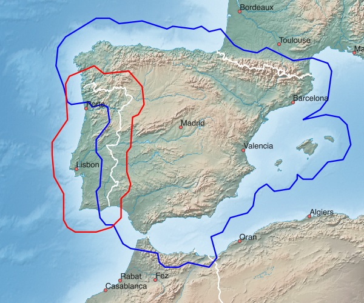
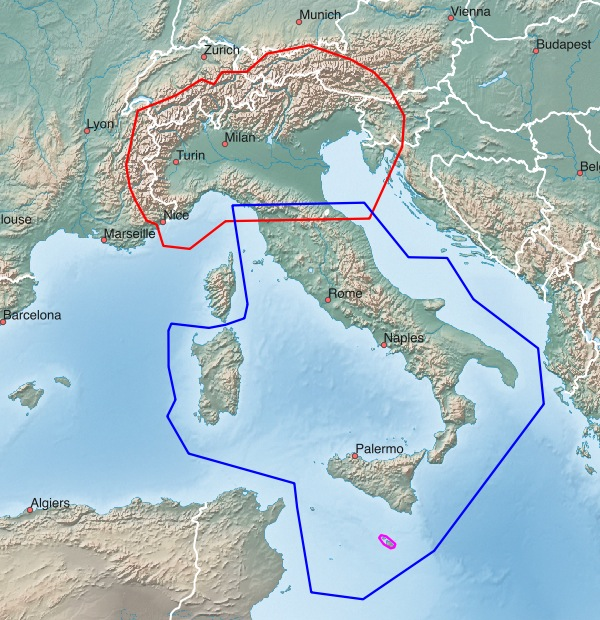

Southern Europe - available Maps:
| Spain | Portugal | Northern Italy |
| Southern Italy | Malta |
Tips concerning download:
- click on the Netbook Icon in the PC browser: the map will be downloaded onto your personal computer
- click on the Locus Map Icon in the Android browser: map+design will be downloaded into Locus Map
- click on the OruxMaps Icon in the Android browser: the map will be downloaded into OruxMaps
Spain, Portugal:

| Spain ESP+ 828 MB |
| Portugal PRT+ 181 MB |
Northern Italy, Southern Italy, Malta:

| Northern Italy ITA+NORTH 979 MB |
| Southern Italy ITA+SOUTH 431 MB |
| Malta MLT 3 MB |